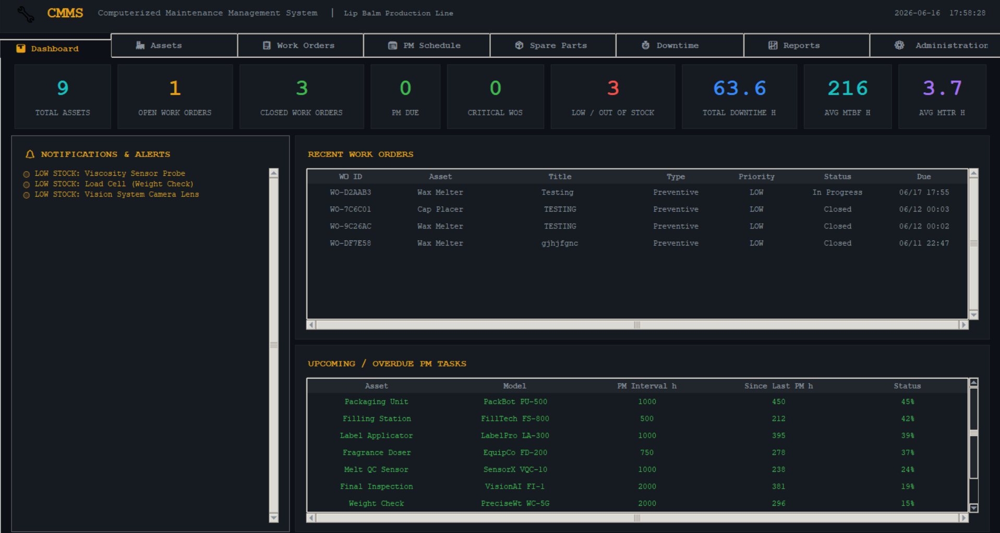
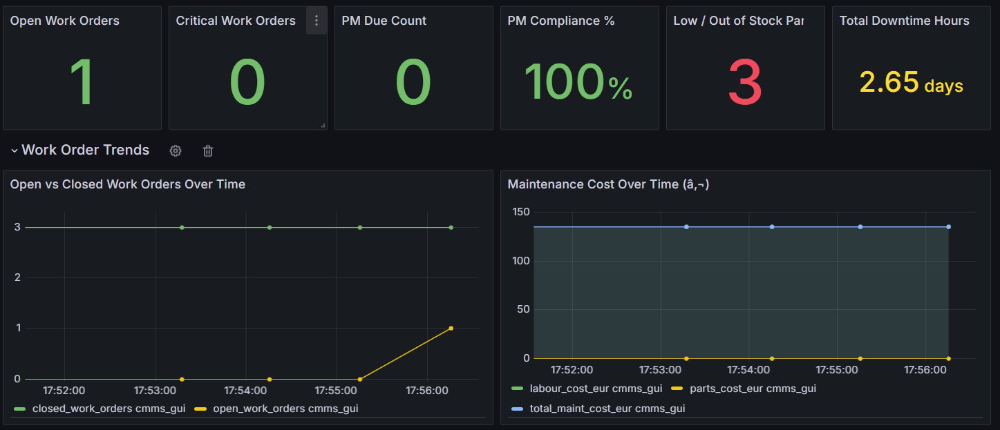
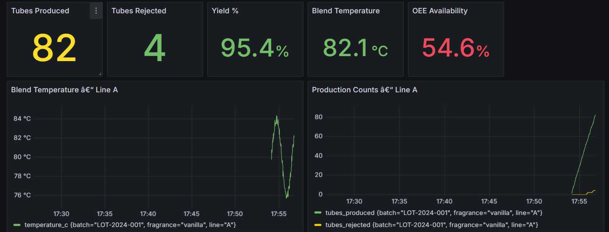
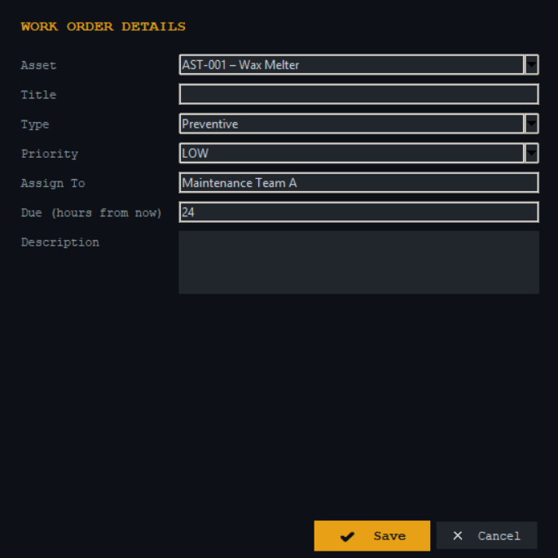

Overview
This project simulates a complete industrial manufacturing environment for a lip balm production line. It was designed to reflect the complexity of real-world manufacturing operations by integrating multiple industrial systems into a single cohesive platform.
The system manages production scheduling, equipment maintenance, spare parts inventory and real-time analytics — all containerised using Docker to allow reproducible and portable deployment across different environments.
Features
- Manufacturing Execution System (MES) for production scheduling and control
- Human-Machine Interface (HMI) for operator interaction
- Computerised Maintenance Management System (CMMS)
- Real-time production analytics and KPI monitoring
- Grafana dashboards for live data visualisation
- InfluxDB time-series data storage and querying
- Work order creation and management
- Asset health and downtime tracking
- Spare parts inventory management with low-stock alerts
- Batch traceability and manufacturing records
- MTBF and MTTR performance analysis
- Full Docker containerisation for easy deployment
Technologies Used
How to Run
Prerequisites
Steps
-
Clone the repository
git clone https://github.com/AnTo-2144/lip-balm-production-line.git -
Navigate into the project folder
cd lip-balm-production-line -
Build and start all services
docker compose up --buildThis starts the HMI, MES, CMMS, InfluxDB and Grafana containers in one step.
-
Open the HMI (operator interface)
http://localhost:8080 -
Open the Grafana dashboards
http://localhost:3000Default credentials — username: admin / password: admin
-
Stop all services when finished
docker compose down
Software Architecture
The system is structured across four layers, each with a clearly defined responsibility. All services are containerised with Docker, allowing them to be spun up together on any machine with a single command.
Gallery

CMMS Dashboard — asset and work order overview

Grafana — maintenance trends and cost analysis

Grafana — real-time production monitoring

CMMS — work order creation form
Challenges
One of the primary challenges was integrating multiple industrial systems — MES, CMMS and analytics — into a single cohesive platform while maintaining realistic simulation behaviour. Designing the data flow between services required careful planning, particularly when synchronising production events with time-series data in InfluxDB.
Containerising all services with Docker while ensuring reliable inter-service communication added another layer of complexity. Designing the HMI to feel intuitive and responsive while reflecting real industrial operator interfaces was also a significant design challenge.
What I Learned
This project deepened my understanding of industrial automation principles and how manufacturing systems are structured at an operational level. Working with InfluxDB showed me how time-series databases differ from relational databases and how to model sensor and production data efficiently for real-time querying.
Integrating Grafana for live visualisation demonstrated how powerful dedicated monitoring tools are for operational dashboards. Docker containerisation reinforced best practices around service isolation, environment management and reproducible deployments.
Future Improvements
- Integrate predictive maintenance algorithms based on sensor trend analysis
- Add PLC (Programmable Logic Controller) simulation for greater industrial realism
- Expand the simulation to support multiple concurrent production lines
- Implement OEE (Overall Equipment Effectiveness) tracking and reporting
- Add role-based access control for operators, managers and maintenance teams